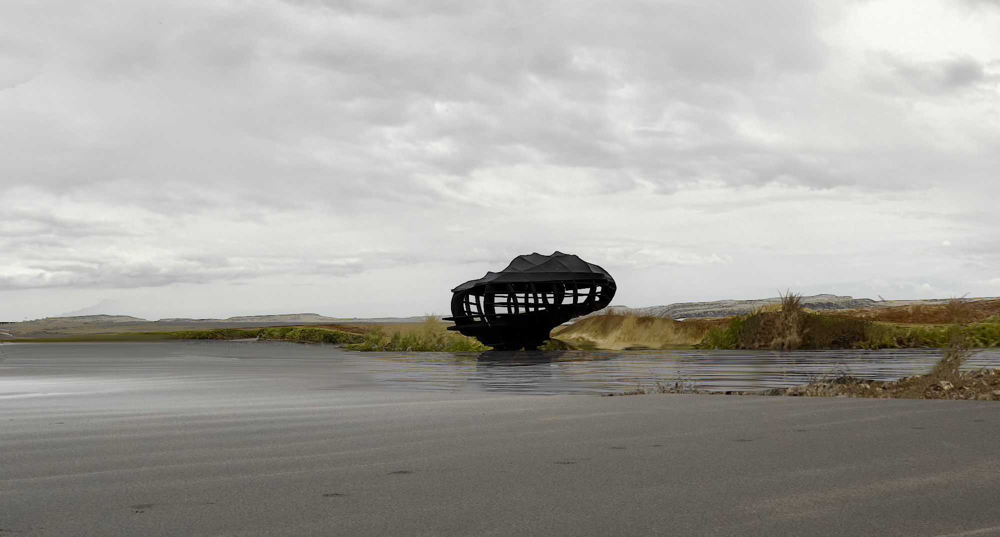
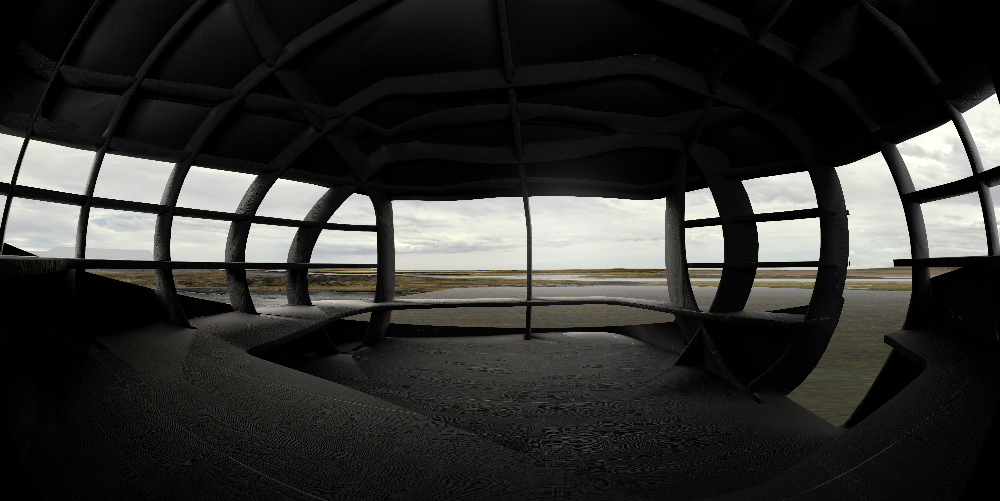
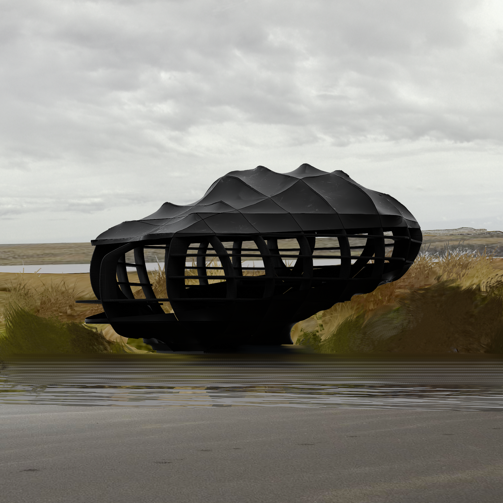
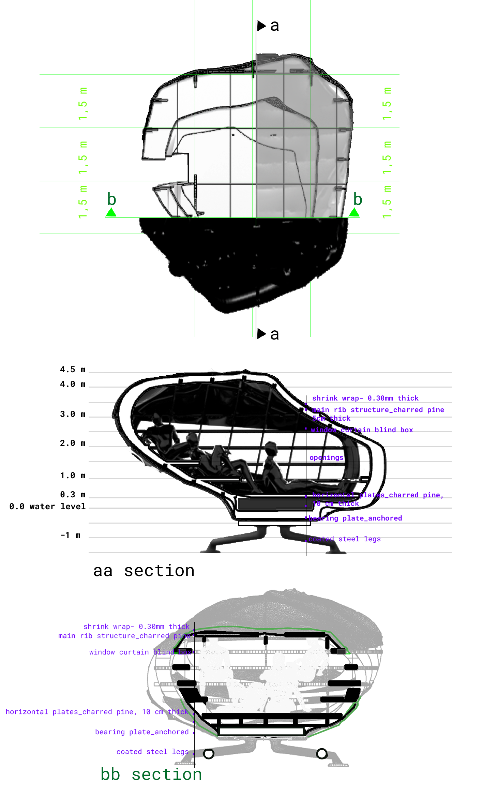
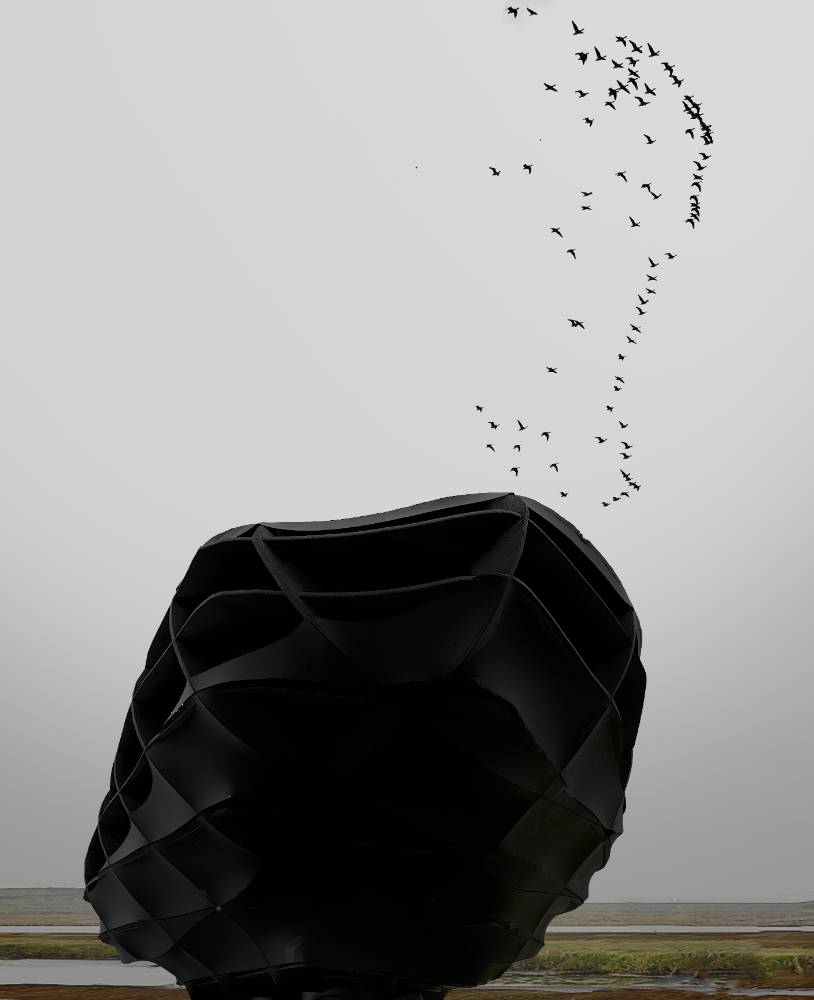

VATN — Water
water-hut, hosting 5 people at a time

Water huts are partially placed in the ditches using the natural topography of the water landscapes to provide the openings aligned close to the water level.
Structure and materiality follow the same principles with the other forms.
The Structure: Charred Icelandic Larch We use Icelandic-Grown Siberian Larch, treated with the Shou Sugi Ban process.
Form: Charred Icelandic Larch used structural and for space making and form finding.

Why: Larch is the only local timber with structural density.
Treatment: Fire-charring creates a carbon layer that provides weather resistance and pest control without chemicals.

Look: Deep black, matching the volcanic sand.
The Skin: Industrial Shrink Wrap The facade is 12-mil (0.30mm) Flame Retardant heat shrink wrap.
History: This is the standard material used to winterize Icelandic trawlers on land.
Application: Heat-shrunk on-site to create a "drum-tight" skin. It sheds snow, blocks wind, and allows the dark timber skeleton to remain visible.

